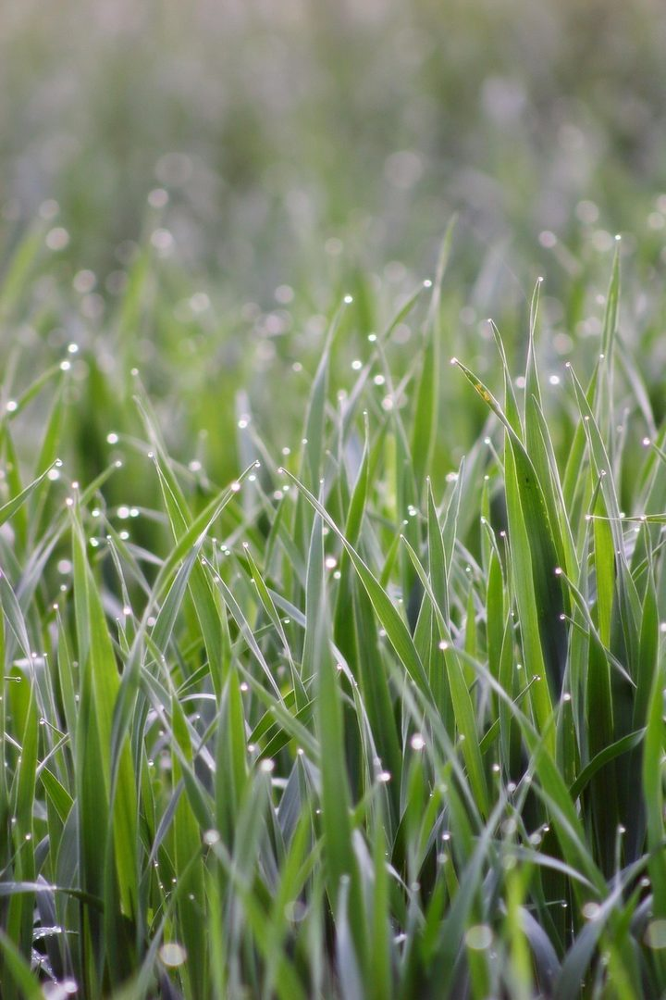

IndigoBuntingGood morning!
Nur das Schöne wird die Welt retten!
Fjodor Dostojewski
Nicht verzagen, Doc Alvers fragen!
Mathematik · Berufliches Gymnasium 11 · KW 39
Flächen, Volumen, Oberflächen — und was passiert, wenn man alles verdoppelt
Nicht verzagen, Doc Alvers fragen!
5 Stunden, Lernbereich 2 — Stunden 16 bis 20 von 20, damit ist LB 2 fertig
Drei Blöcke: ebene Figuren, Körper, Skalieren und Umstellen
Alles baut auf einer Idee auf: Grundfläche mal Höhe, manchmal geteilt durch drei
Zum Abschluss 20 vermischte Aufgaben im Mathe-Labor
Nicht verzagen, Doc Alvers fragen!
Kapitel 01
Vier Formeln, die alles andere tragen
Nicht verzagen, Doc Alvers fragen!
Rechteck: , Umfang
Dreieck: — halbes Rechteck
Trapez: — Mittelwert der Parallelen mal Höhe
Kreis: , Umfang
Nicht verzagen, Doc Alvers fragen!
Rechteck mit cm und cm — wie breit ist es?
, also
Damit cm — nicht
Der Umfang zählt jede Seite doppelt, das ist die häufigste Falle
Nicht verzagen, Doc Alvers fragen!
cm gibt cm², also rund cm²
Rückwärts aus cm²: , also cm
Erst dann der Umfang: cm
Immer über den Radius gehen — er verbindet Fläche und Umfang
Nicht verzagen, Doc Alvers fragen!
cm, cm: cm²
Trapez mit , , : cm²
Sektor mit : das ist ein Viertel des Kreises
Bei cm also cm²
Nicht verzagen, Doc Alvers fragen!
Diagonale im Rechteck mit cm und cm: cm
Dieselbe Rechnung liefert die Mantellinie eines Kegels
Bei cm und cm ist cm
, , und , , sollte man auswendig erkennen
Nicht verzagen, Doc Alvers fragen!
Wer den Radius hat, hat den Kreis. Alles andere folgt in einer Zeile.
Merksatz
Nicht verzagen, Doc Alvers fragen!
Kapitel 02
Grundfläche mal Höhe — und wann durch drei
Nicht verzagen, Doc Alvers fragen!
Säulen (Quader, Zylinder, Prisma):
Spitzen (Pyramide, Kegel):
Zylinder mit , : cm³
Kegel mit , : cm³
Nicht verzagen, Doc Alvers fragen!
Volumen , bei cm also cm³
Oberfläche , bei cm also cm²
Merkhilfe: die Kugeloberfläche ist viermal die Kreisfläche
Beide Formeln stehen in der Formelsammlung — nachschlagen ist erlaubt
Nicht verzagen, Doc Alvers fragen!
Zylinder:
Die Klammer verrät den Bau: für zwei Deckel, für den Mantel
Ausmultipliziert: — genau diese zwei Teile
Quader cm: cm²
Nicht verzagen, Doc Alvers fragen!
Würfel mit cm³: Kante cm
Oberfläche dann cm²
Würfel mit cm Kante: cm³
** Liter cm³**, also Liter
Nicht verzagen, Doc Alvers fragen!
Ein Liter ist ein Würfel mit zehn Zentimetern Kante. Wer das weiß, rechnet Volumen nie wieder falsch um.
Merksatz
Nicht verzagen, Doc Alvers fragen!
Kapitel 03
Warum doppelt so groß viel mehr als doppelt ist
Nicht verzagen, Doc Alvers fragen!
Kreisradius verdoppelt: die Fläche wird viermal so groß
Denn — der Faktor wird mitquadriert
Würfelkanten verdoppelt: das Volumen wird achtmal so groß
Regel: Länge , Fläche , Volumen
Nicht verzagen, Doc Alvers fragen!
Größer werden
Kante mal
Oberfläche mal
Volumen mal
darum kühlen große Tiere schlechter
Kleiner werden
Kante halbiert
Oberfläche ein Viertel
Volumen ein Achtel
darum frieren kleine Tiere schneller
Nicht verzagen, Doc Alvers fragen!
nach : durch teilen
Also
Probe mit Einheiten: cm³ geteilt durch cm² ergibt cm — passt zu einer Höhe
Die Einheitenprobe findet fast jeden Umstellfehler
Nicht verzagen, Doc Alvers fragen!
20 Aufgaben im Mathe-Labor — Figuren, Körper, Umstellen
Damit ist Lernbereich 2 abgeschlossen — das hier ist auch Wiederholung
Formelsammlung liegt daneben: es geht ums Auswählen, nicht ums Auswendiglernen
docalvers.de/mathetest11-figuren.html
Nicht verzagen, Doc Alvers fragen!